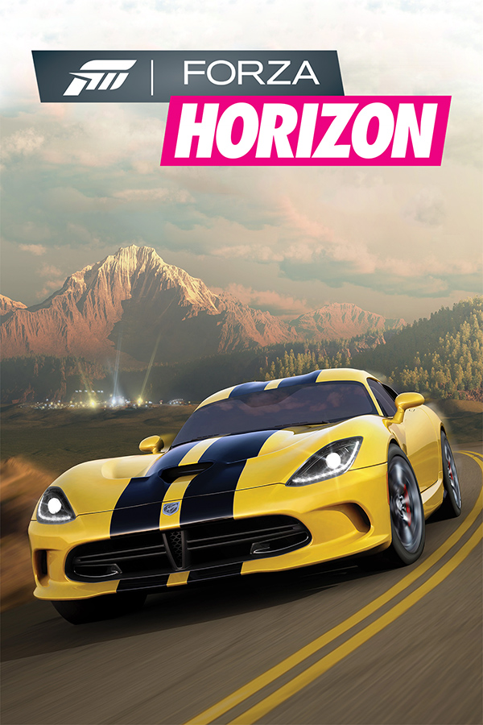

Forza Horizon
Forza Horizon
Details
|  | |
| Playtime | Not Played |
| Last Activity | Never |
| Added | 5/1/2025 23:22:47 |
| Modified | 5/1/2025 23:24:31 |
| Completion Status | Not Played |
| Library | Playnite |
| Source | |
| Platform | Microsoft Xbox 360 |
| Release Date | 9/27/2016 |
| Community Score | 92 |
| Critic Score | 91 |
| User Score | |
| Genre | Racing |
| Developer | Playground Games Turn 10 Studios |
| Publisher | Microsoft Studios |
| Feature | Controller Support Full Controller Support Multiplayer Single Player |
| Links | PCGamingWiki HowLongToBeat IGDB MobyGames Wikipedia WSGF |
| Tag | Automobile Contemporary Direct control First-Person ForzaTech Oceania Realistic Real-Time Third Person |
Description
Forza Horizon 3 is a 2016 racing video game developed by Playground Games and published by Microsoft Studios for the Xbox One and Windows. It is the ninth instalment in the Forza series and the third instalment in the Forza Horizon sub-series. The game is set in a fictionalised Australia, where the player is the leader of the titular Horizon car festival and has to expand the festival by completing events to earn fans. Like previous Forza Horizon games, it features an open world environment where players can freely roam the map.
Forza Horizon 3 began development in 2014 after the release of Forza Horizon 2. Turn 10 Studios assisted with the game's development, as they did with other Forza Horizon games. Over the course of development, Playground Games tested different technological concepts for the game, while also trying to improve more features over the previous title. The Australian setting was chosen for its variety of regions, and a team was sent to Australia to conduct research for the game.
Forza Horizon 3 was released in September 2016. At release, critics praised the map design, graphics, and amount of content, while most criticism was directed towards the monotony of races. The game won and was nominated for multiple awards and sold over 2.5 million copies in 2017. Downloadable content had also been released periodically, including two expansion packs. The game was followed by Forza Horizon 4, released in 2018.
Gameplay
Forza Horizon 3 is a racing video game set in an open world environment based in a fictional representation of Australia. The gameplay world is about twice the size of Forza Horizon 2, and the game contains locales and regions based upon their real-life Australian counterparts. While previous Forza Horizon games have depicted the player as being one of the racers of the Horizon Festival, the player is now the director of the festival, and their role is to expand it throughout Australia by completing races, challenges, and stunts to earn fans. If enough fans are earned at a certain threshold, the player can set up new festival locations and unlock more events.
Three types of racing modes are available in the game: Exhibition, Championship, and Rivals. Exhibition is a single race at one location, whereas Championship contains multiple races dispersed throughout the gameplay world. Rivals is a versus race against the player and an AI opponent, where the player has to compete in a time trial to beat the time set by the opponent. Added in Forza Horizon 2, the player can also participate in Bucket List Challenges, where they are given a task to complete with a specific vehicle. The newly introduced Horizon Blueprint feature lets the player customise races and Bucket List Challenges.
Apart from races and Bucket List Challenges, the player can engage in several other activities. Breakable boards called "bonus boards" can be discovered around the gameplay world, and when driven over, they award the player with experience points or a discount on fast travelling. As the player progresses through the game, they can receive rumours of barn finds to uncover and restore. When performing stunts with a vehicle, the player is awarded "skill points". If enough skill points are acquired, they can be used to purchase perks that may award cars, experience points, in-game currency, and driving advantages, among other benefits. The player may participate in Forzathon competitions, which provide weekly challenges and give awards once completed.
Returning from previous Forza games, Forza Horizon 3 features a vehicle AI called Drivatars, which learns and mimics the driving abilities of Forza players. Drivatars are found throughout the gameplay world, and they appear in races as opponents, where they can be adjusted by game difficulty via the player. Apart from standard races, Drivatars can be challenged to a head-to-head race. If the player wins the race, they will be able to recruit that Drivatar onto their racing team, which allows the player to earn additional experience points, fans, and in-game currency. The player can also recruit Drivatars in a car convoy. When in a car convoy, Drivatars will follow the player, and they can be upgraded by skill points to perform certain tasks throughout the game.
The player can upgrade and tune individual parts of their vehicles, with body kits being available as well. Additionally, the game includes a vehicle cutsomisation option called "Upgrade Heroes", which utilises both tuning and body kits to alter both a vehicle's performance and appearance, although the cutomisation preset is limited to a certain number of vehicles. The colour of vehicles and their collective parts can be changed, and the player can also design liveries for vehicles. These liveries can be sold through the in-game shop, which further includes an auction system to bid on cars from other players. A total of 350 vehicles were available at the game's launch.
Forza Horizon 3 offers open world multiplayer modes including an online cooperative mode for up to four players and a competitive mode for up to twelve, where players can compete in races and minigames with their vehicles. As from previous Forza games, the player can join clubs, where they have the ability to compete against players of other clubs in races and minigames.
Due to the licensing issues, vehicles manufactured by Volkswagen are absent from the game.
Development
Forza Horizon 3 was developed by UK-based Playground Games, the creators behind previous Forza Horizon titles. Additional work was provided by Turn 10 Studios, who made the Forza Motorsport series. The game was designed using the ForzaTech game engine, which is used for most other Forza games. The development team started conceptualizing the creation of Forza Horizon 3 in 2014 initially after Forza Horizon 2 was released. The team desired to give players more freedom in Forza Horizon 3 compared to its predecessor. They also aimed for the game to be of better quality, therefore they sought to optimise more gameplay and graphical aspects over the previous title. One of these changes was minimizing the amount of loading screen time, as it could damage the game's impression of being persistently high quality. Creative director Ralph Fulton felt that Forza Horizon 3 was a "generational leap" over its predecessor because of the work the development team put in to better improve the game.
Setting
Playground Games started with a broad range of locations for Forza Horizon 3, narrowing the list of locations with more research. Because of Australia's largely diverse environment, the development team ultimately made the decision to have the game set there, as they also considered the country to be a possible setting for future Forza Horizon games. Mike Brown, a game designer at Playground Games, thought that the team made the correct decision to select Australia as the setting, describing the country's diverse scenery as "perfect".
To help create a convincing gameplay world, a team was sent to Australia to take reference photos to aid in the game design. These photos consisted of plants, rocks, and road details, among others. A significant amount of work was put into simulating landmarks of the country, such as the Twelve Apostles. Minor details were also implemented into the game, like the colours of Australian phone boxes and garbage bins, as well as including native wildlife. Playground Games stated that they explored and represented every ecologically distinct part of the country in Forza Horizon 3; the gameplay world consists of six distinct regions. However, the world is somewhat geographically inaccurate, with locations in real life existing in different geographic areas in the game. According to Brown, the explanation for this inconsistency was to create a better gameplay experience for the player.
Ralph Fulton explained that Playground Games desired to help celebrate Australian car culture and familiarise the culture to people in other parts of the world, thus multiple Australian car models were incorporated into the game. He added, "[Australia's] culture of Ford vs Holden, and V8s and Utes isn't immediately familiar to everybody north of the equator, but we did feel it was really interesting and colourful and would add to the game."
The Australian locations include the desert town of Coober Pedy, in South Australia; the Great Ocean Road in Victoria; Byron Bay, in New South Wales; Ormiston Gorge in the Northern Territory; and Surfers Paradise in Queensland.
High-dynamic-range (HDR) played a key role in the visuals of Forza Horizon 3. Originally, there was not any thought of incorporating HDR into the game during development, but due to the development team discovering the HDR output of the Xbox One S, it was decided to start programming the feature. ForzaTech was found to be a good match for HDR, as the light rendering of the game engine was adequately set up the incorporate the brightness gamut of HDR. Multiple televisions were then bought for investigation of the feature. The development team later discovered that the televisions displayed HDR variously, which added more difficulty to the process of adding the feature to the game.
Over the course of development, the team talked about and tested new technology prototypes for several months to help enhance the visuals for the game. Among these prototypes was an HDR sky system. As an idea, the team thought of pointing a high-resolution camera at the sky for hours as a time-lapse. A test was then conducted in Leamington Spa, England. Lighting artist Jamie Wood admitted that during the test, there was more variety in shooting a camera at a sky than the sky design system that was used in Forza Horizon 2. Three teams of two were then sent to Braidwood, New South Wales to capture Australia's more distinguishing skies, clouds, and weather patterns. For a few months, the teams performed the shooting process using HDR cameras. The cameras took thousands of photos with frame interpolation over 24 hour periods, alongside the lenses and light sensors needing to be cleaned regularly. Videos of the sky were also taken, with the footage being about 30 days long overall. The shooting process took place through various weather conditions and times of day to resemble a "dynamic weather system" in the game. This further meant that camera exposures and filters had to be changed frequently to adjust to each time of day. The footage of the sky was then imported into the game. Because of the sky footage, days were longer in Forza Horizon 3 than its predecessor, and clouds also correlate with weather systems in-game.
The lighting effects in Forza Horizon 3 are calculated with real-time computing, which helps simulate a realistic sun in the game. Shadows are generated based on how light is distributed and occluded depending on the locations of surrounding objects and substances. Real-time computing is also used in the game's voxel-based global illumination system to calculate the bouncing of light. The sky, other sources of light, and occlusion data is used to determine surfaces light bounces onto. This helps light accurately blend into areas that have varying degrees of brightness.
Playground Games wanted the beach to be an important racing area in the game, therefore much effort was put into allowing the sea to realistically interact with the beach to make the location look lifelike. To help assist in developing the sea, Playground Games contacted game developer Rare, who was working on Sea of Thieves at the time. As both developers were working on creating the sea in their games, they decided to share computer code, which both developers improved on.
Car models were mainly designed with CAD data exchange between the developers and the car manufacturer. However, for cars that didn't support CAD data exchange, especially rarer and older cars, designers had to track them down for modelling details, sometimes taking upwards of weeks to locate some of them. As with the Lamborghini Centenario, the cover car of the game, a photographer was sent to Italy to take photos and measurements of the car. Since the Centenario was made of hundreds of different types of materials, Playground Games desired to simulate the car at the "sub-pixel level". Using data from the images and measurements, a mesh of the car was modelled with 3D Studio Max, while designers had to figure out where materials needed to be simulated in the mesh.
The sound team recorded actual cars for the game, capturing intake, engine, and exhaust sounds. They employed the looping model from Forza Motorsport 6 in conjunction with a granular synthesis model to implement car engine sounds in-game. The looping model shifts the pitch of cross-faded loops over the rev range, and was created from recordings of a car on a dyno making full-throttle runs. The granular model is made of audio tracks of a car under acceleration and deceleration, and was built by recordings of cars driven on track from idle to redline and back. Vehicle recording was done by Warner Bros. Post Production. The team used lavalier and omni mics around the car to capture audio, relying on high SPL mics and pre-amp attenuators for certain race cars can reach 130 dB SPL.
Ralph Fulton explained that "humans form their first impressions incredibly quickly", elaborating that the first few minutes of playing a video game can drastically change how a player thinks of it. Playground Games later conducting a study of first impressions before developing Forza Horizon 3. Two groups of test subjects both played the same Forza game for the same amount of time, except one group played in a sports car and the other played in a regular car. When asked about their experiences playing the game, the group that played in the sports car rated the game generally better. As a result, Playground Games spent a large part of their development cycle (about eighteen months) developing and curating the first few scenes of the game. In February 2015, it was decided that the first few scenes would be split between the opening drive and the first of the game's events, with the decided route for the opening drive being finalizsed a month later. By June 2015, the route was being tested and concept art was drawn for the scenery that the player would see during the opening drive, although some concepts had to be adjusted or removed, such as the rainforest being made less dense. Problems also emerged with the car that the player would be driving in during the opening sequence, the Centenario. The Centenario resulted in being too fast for the player to observe the scenery as intended, requiring changes in the route and terrain. As the opening drive also went off-road, a cutscene had to be instituted to switch the Centenario to a buggy to accompany the harsher terrain. Additionally, the first event after the opening drive had to be pushed back for further improvement, prompting modifications to be made to the opponent vehicle.
During the development process of the four-player cooperative campaign, the goal was to enable all players to play with "as little friction as possible", with the development team then generating a list of goals for an organised campaign. After assessing the campaign layout, the team created a list of problems that could negatively influence the gameplay and came to the conclusion that there four major issues that could affect gameplay the most. With each issue, the team brainstormed a list of possible solutions, picking the solution that produced the least conflict between players. The first issue, where players could be hours apart in campaign progress, made a screen appear that informs the player of how many fans they earned, and the festivals they can upgrade or open whenever they leave a cooperative session. If players also completed races in a cooperative session that have not yet been unlocked in their single-player session, the race will appear as "completed" on the user interface in single-player. The second issue was that races could have specific requirements for cars based on the restrictions the session leader has created, players with fewer cars may not reach those specifications. The solution was considered more straightforward, which introduced a rental feature that allowed players to borrow the session leader's car during a race. For the third issue, where players with less skill may finish races in lower positions, every race was converted into a team race between the players and the AI opponents. A point system was then added for every opponent beaten. This created a structure that let inexperienced players to contribute to the campaign even if they beat only one opponent. Although the fourth issue wasn't part of the team's original goals, it did come up often during testing phases, which was that the leader of the session had to guide other players through the game, even if there was not any sort of communication between players. To resolve the problem, a feature was implemented that notified the session leader's actions to all other players whenever the leader did something, such as starting an event.
Release
Forza Horizon 3 was announced on 13 June 2016 during Microsoft's E3 press conference, where Ralph Fulton displayed a gameplay demo during the briefing. The game was released on 27 September 2016. Players were able to purchase three different editions of the game: the Standard, Deluxe, or Ultimate editions. The Deluxe and Ultimate editions gave players several downloadable content car packs and other exclusive content, while players that pre-ordered the Ultimate Edition were also able to earn early access to the game on 23 September. Forza Horizon 3 supports cross-platform play and is part of the Xbox Play Anywhere program, allowing the game to be playable both on Xbox and Windows if purchased digitally.
Initially after the game was released, there were various in-game performance problems that occurred concerning the game's compatibility with Windows. An issue also arose involving the game's wheelspin feature, an award system that offers the chance for players to earn a new car or a certain amount of in-game currency, which may sometimes give players the maximum amount of currency that could be acquired in the game. These issues were later addressed and promptly fixed by Playground Games. Some players had also claimed that they were falsely banned after Playground Games issued bans to players using hacking clients. A Microsoft spokesperson later stated that players who felt that they were falsely punished can email them for investigation and removal of the bans. In January 2017, an update had the potential to corrupt the game for Windows users. The corrupted update was later removed by Playground Games.
In January 2018, Forza Horizon 3 was ported to the Xbox One X, enabling the graphics of the game to be changed on the console, including adding 4K resolution, higher polygon models, increasing sample quality, and enhancing other graphical features. The game made use of Groove Music to play custom soundtracks, however, the ability to stream music to the game was stopped on 31 March 2019, after Groove Music was discontinued, limiting players to the in-game soundtrack as with the other Forza Horizon games. On 27 September 2020, the game and all its downloadable content were removed from the Microsoft Store after reaching end-of-life status.
Downloadable content
Several downloadable content (DLC) car packs were released periodically. While most packs featured a small collection of cars, some packs had themes, such as being type specific or manufacturer specific. Examples include the "Motorsport All-Stars Pack", which includes several racing cars, and the "Porsche Car Pack", consisting of cars made by vehicle manufacturer Porsche. In addition, the "Hoonigan Car Pack" includes in-game versions of cars that were used by the Hoonigan Racing Division.
On 13 December 2016, the expansion pack Blizzard Mountain was released. The pack added a new location to the game, characterised by a mountainous landscape and having harsh, snowy weather conditions. The severe weather conditions added a challenging feature to driving, as aspects like icy roads and whiteout affected the ability of the player to control the vehicle. Instead of accumulating fans, as is synonymous in the Australian location, players had the goal of collecting stars instead. Similar to earning fans, acquiring certain amounts of stars unlocks more events around the region. Additionally, three racing game modes were added to the DLC, and players received a rally/off-road car pack that is able to be customisable with snow tires with the purchase of Blizzard Mountain.
On 9 May 2017, in collaboration with Mattel's Hot Wheels, Playground Games released a second expansion pack titled Forza Horizon 3: Hot Wheels. Like Blizzard Mountain, the pack added a new area to the game, portrayed as an archipelago connected by real-world scale Hot Wheels stunt track pieces instead of regular roads. The game's track acts similarly to an actual Hot Wheels course, illustrated by different kinds of stunt sections, such as vertical loops and half-pipes. Races can be customised with the Horizon Blueprint feature, where individual pieces of track are able to be swapped with other pieces. Continuing from Blizzard Mountain, stars have to be earned in races to unlock more events, and players were given a car pack with the purchase of the expansion, of which some of the vehicles are life-scale Hot Wheels cars.
There have been two crossovers between Forza Horizon 3 and other video game franchises. During the game's release, players were able to obtain Halo's fictitious Warthog if they played either Halo 5 or The Master Chief Collection on the Xbox One. Players may also win the car by completing challenges in the game. On 1 August 2017, Forza Horizon 3 players received the Quartz Regalia from Final Fantasy XV through the in-game message system, while Final Fantasy XV players received an Xbox Live message with a code to redeem the car. The DLC was free for those who've played Forza Horizon 3 on Windows or either game on Xbox prior to that date. It took about 1,500 hours to program the Regalia into the game, since there was no real-world data that the game designers could take reference from.
Reception
Forza Horizon 3 received "universal acclaim" from critics for the Xbox One version, while the Windows version received "generally favorable" reviews, according to review aggregator website Metacritic.
The choice of an Australian setting was well received by critics. Colin Campbell of Polygon admired the realistic portrayal of Australia and enjoyed exploring the various locales, particularly noting the Outback, where he felt was the most enjoyable region. Miguel Concepcion of GameSpot thought that Australia was a good fit for the Forza Horizon series and further remarked that off-road activities were more prominent as a result of the location. IGN's Luke Reilly praised the game for its attention to detail towards specific aspects such as street signs and road markings, and for its variety of landscapes, calling it an improvement from Forza Horizon 2, where he felt the terrain felt largely the same. Jeff Gerstmann of Giant Bomb agreed and also thought the world was better to drive through than its predecessor. Nicholas Tan of GameRevolution was fond of the details of the landmarks and visuals of the gameplay world, calling it a "sight to behold".
The races received mixed reviews. Concepcion felt that the races were thrilling and stated that they are "never bereft of split-second moments of gratification." USgamer's Jaz Rignall praised the game for its variety of races set across different types of terrain, and concluded that they were a "step up" from its predecessor. Andrew Reiner of Game Informer appreciated the race course layouts and thought that most races felt intense and were "awesome adrenaline rushes," but criticised head-to-head races against Drivatars, stating that they are rarely enjoyable and sometimes have imbalance problems between vehicles. Towell also criticised head-to-head races for being too easy to win. Towell further remarked that generally, races were tedious, and in contrast to Reiner, felt that track layouts were uninteresting. Gerstmann thought that completing races felt repetitive, and remarked that the Championship game mode was "overly redundant", Phil Savage of PC Gamer liked the Drivatar opponents in the game, calling the AI system "broadly effective." He also enjoyed that players that he knows sometimes appear in races, as Drivatars are usually people on a player's friend list or game club. Concepcion agreed, and considered them a good alternative to "traditional catch-up or rubber-band AI". The Horizon Blueprint feature, a new race customisation feature, was better received. Rignall appreciated the feature, and liked how the feature allowed him to race any type of vehicle against similar types, letting him choose the vehicles he wants to race with. Reilly praised the feature for the amount of creativity it provides for players, stating that races can be recreated in "dozens and dozens of different ways". Reiner liked the feature for letting play events in the way they want and called the Horizon Blueprint a "smart move" to be added by Playground Games.
Critics praised the game for its variety of content and freedom of choice for the player. Concepcion acclaimed Forza Horizon 3 for the amount of content available in the game's campaign, comparing it to Burnout Paradise. Campbell appreciated the variety of activities that he could partake in, and felt that exploring the world and participating in other activities were more enjoyable than completing races. Both Tan and Brett Makedonski of Destructoid liked the fact that they had the choice to engage in various activities or drive around the gameplay world without repercussions. However, Tan criticised the game for having little incentive to explore the gameplay world. Rignall was impressed by the large array of different types of vehicles the player was able to use, further stating that they offer "an exceptionally broad spectrum of driving experiences". Reilly applauded the game for having a large range of car customisation options.
The game's graphics were positively received by critics. Towell praised the game for its realistic day and night cycles and rainy weather. Rignall was impressed by the graphics of cars and landscapes, stating that Forza Horizon 3 is one of the "best-looking" games on the Xbox One. Concepcion appreciated that the graphics of the game were able to be customised on the Windows version to a large extent. Reilly praised the game's global illumination system, and acknowledged that the system's lighting made the world feel more unique and realistic.
Commercial performance
Ralph Fulton commented that the success of Forza Horizon 3 exceeded the expectations of Playground Games. The game was the seventh best-selling in Australia and the tenth best-selling in the United Kingdom in 2016. In the same year, it was the ninth best-selling on the Xbox One in the United States. More than 2.5 million copies of Forza Horizon 3 were sold in February 2017, effectively bringing the Forza series to amassing $1 billion in sales. In September 2018, the game surpassed 10 million players.